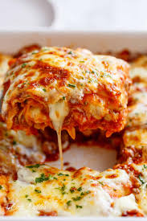

Lasagna Recipe

Ingredients:
- Tomato sauce
- 6 Tomatoes
- 2 onions
- Fresh basil leaves (very cheap if you buy from supermarket)
- 3 tbsp balsamic vinegar
- 1 tbsp olive oil
- Salt and black pepper to taste
- Belchamel sauce
- 3 tbsp butter
- 500 ml milk
- 2 tbsp all purpose flour
- Cheese (grate a handful- I used half cheddar, half mozarella)
- Pinch salt, black pepper and nutmeg
- 300 g Mince meat
- 2 large Carrots
- 1 large courgette
- 3 cloves garlic
- 2 red onions
- Tomato paste
- sheets Lasagna
- Optional (handful of mozzarella cheese)
procedure
- To prepare the tomato sauce, chop the onions and tomatoes into very big chunks. Mix all the tomato sauce ingredients listed and toast in an air fryer/oven for 20 minutes
- Once ready, blend everything and set aside tomato sauce
- For the meat, chop the onions and garlic, fry, but don't brown. Add some chopped basil leaves, salt and pepper, and allow to cook. Add chopped zucchini and carrots, then add mince and break down the lumps. Let it cook for about 10 minutes.
- Add tomato paste and let it cook for 5 minutes. Put aside 3 tbsp of the tomato sauce and add the rest to the mince meat. Allow to simmer for 5 minutes.
- For the belchamel sauce, heat the butter in a pan on low heat till it melts. Don't let it brown. Add the flour and mix till all lumps are gone. Add the milk slowly till it thickens to a smooth paste. Add a little salt, black pepper and nutmeg. Turn off heat and add a handful of cheese
- Spread the 3 tbsp of tomato sauce in a rectangle baking pan. Then layer the lasagna sheets. Spread abit of the belchamel sauce, then meat sauce, then layer the lasagna sheets. Do this process till all the ingredients are done.
- Optional step (add a layer of grated mozzarella)
- Cover baking tin with foil and bake in a pre heated oven for 45 minutes. Once done, put the heat on max and let it brown for 5 minutes
- Let it cool down before serving